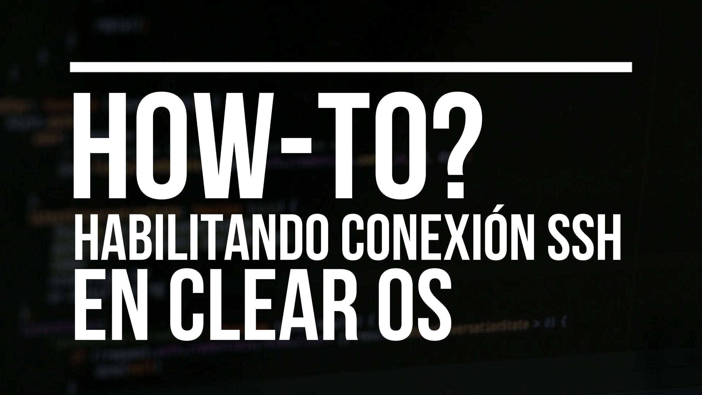
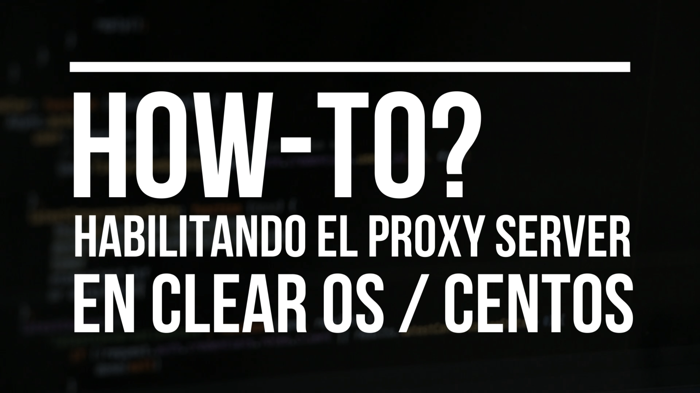

ClearOS Server | Sistemas Operativos III
Instalando ClearOS como Servidor
En este video veremos los pasos requeridos para instalar ClearOS en una máquina virtual, para esta demostración estaremos utilizando VMware Workstations.
Instalando ClearOS como Cliente
En este video veremos los pasos requeridos para habilitar ClearOS en una PC que utilizaremos como cliente.
Modificando la NIC de CLEAROS.
En este video veremos los pasos requeridos para modificar los valores de red del Servidor de ClearOS - Oracle VirtualBox.
Suscribete
Creando Usuarios, Grupos y Permisos en CLEAROS.
En este video veremos los pasos requeridos para administrar usuarios del Servidor de ClearOS - Oracle VirtualBox.
Habilitando el Servicio NFS en ClearOS.
En este video veremos los pasos requeridos para habilitar el Servidor NFS en ClearOS - Oracle VirtualBox
Creando Scripts y Automatizando con Crontabs.
En este video veremos los pasos requeridos para crear scripts y automatizarlos con la herramienta crontabs en ClearOS - Oracle VirtualBox.

Habilitando el Servicio SSH en ClearOS.
En este video veremos los pasos requeridos para habilitar el Servidor SSH en ClearOS - Oracle VirtualBox.
Habilitando el Servidor Telnet en ClearOS
En este video veremos los pasos requeridos para habilitar el Servidor Telnet en ClearOS - Oracle VirtualBox.
Habilitando el Servidor RDP en ClearOS.
En este video veremos los pasos requeridos para habilitar el Servidor rdp en ClearOS - Oracle VirtualBox.
Administrando el Firewall en ClearOS.
En este video veremos los pasos requeridos para trabajar con el firewall y hacer NAT en ClearOS - Oracle VirtualBox
Instalando el Servidor SNMP en ClearOS.
En este video veremos los pasos requeridos para habilitar el servicio de SNMP en ClearOS - Oracle VirtualBox.
Instalando un Servidor DHCP en ClearOS.
En este video veremos los pasos requeridos para instalar una un servidor de DHCP en ClearOS - Oracle VirtualBox.
Instalando un Servidor FTP en ClearOS.
En este video veremos los pasos requeridos para instalar una un servidor de FTP en ClearOS - Oracle VirtualBox.
Instalando un Servidor HTTP en ClearOS
En este video veremos los pasos requeridos para instalar una un servidor Web en ClearOS - Oracle VirtualBox.
Instalando Samba como Grupo de Trabajo en ClearOS.
En este video veremos los pasos requeridos para instalar Samba en ClearOS - Oracle VirtualBox.
Habilitando el Servicio de DNS en ClearOS.
En este video veremos los pasos requeridos para instalar un servidor de DNS en ClearOS - Oracle VirtualBox.
Creando un Clúster de Servidores en ClearOS.
En este video veremos los pasos requeridos para crear un clúster de servidores en ClearOS - Oracle VirtualBox.
Samba como Controlador de Dominio en ClearOS.
En este video veremos los pasos requeridos para instalar Samba 4 como controlador de Active Directory en ClearOS - Oracle VirtualBox
Habilitando el Roaming Profile en Samba 4 - ClearOS
En este video veremos los pasos requeridos para habilitar Roaming Profile en Samba 4 como controlador de Active Directory en ClearOS - Oracle VirtualBox.

Instalando el Servidor Proxy Squid en ClearOS
En este video veremos los pasos requeridos para habilitar el servicio de proxy en ClearOS - Oracle VirtualBox
Creando un Cups de Impresoras en ClearOS
En este video veremos los pasos requeridos para habilitar un servidor cups en ClearOS - Oracle VirtualBox.
Instalando un Servidor VPN en ClearOS
En este video veremos los pasos requeridos para habilitar un servidor de OpenVPN en ClearOS - Oracle VirtualBox.
Instalando un Servidor VOiP en ClearOS
En este video veremos los pasos requeridos para habilitar un servidor de Asterisk en ClearOS - Oracle VirtualBox.
Creando un RAID 0-1-5 en ClearOS.
En este video veremos los pasos requeridos para crear RAID 0-1-5 en ClearOS - Oracle VirtualBox.
Instalando un Servidor de LTSP en ClearOS.
En este video veremos los pasos requeridos para crear un servidor de LTSP - Oracle VirtualBox.
Instalando un Servidor SMTP en ClearOS.
En este video veremos los pasos requeridos para crear un servidor email en Oracle VirtualBox.
Instalando un Web Admin en ClearOS.
En este video veremos los pasos requeridos para crear un servidor email en Oracle VirtualBox.
Sistemas Operativos III / Santiago Duval Contreras - 20153246 | Esta página web ha sido creada con propósitos educativos, sin fines, además, de lucro.